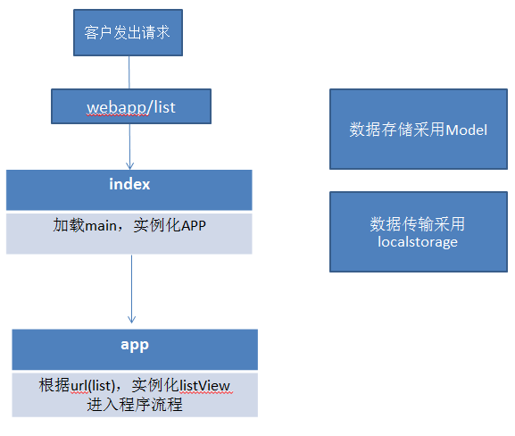
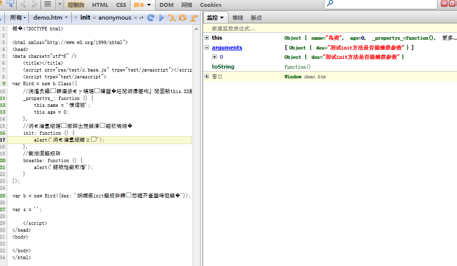
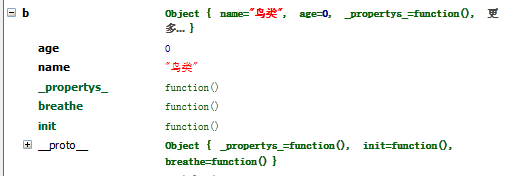
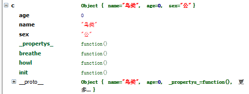
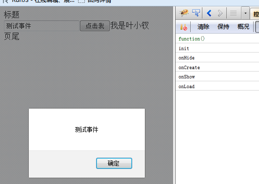

前言
北上是大城市，魔都这里的节奏确实比成都快得多，在成都老夫一般走的最晚，7点多才撤退，这边居然8点走了还会有一点点罪恶感！！！
这边加班就不叫加班啦，几个同事都是10点左右才走，而且累计工作时长最长的是我们老大！
工作第一周到周三了才把电脑这些事情搞好，期间又要找房子，搬家，所以第一周没干神马事情就结束了，老大也没有分配任务。
第二周一开始就给分配了任务，在新框架上开发，自己也不是很熟悉，所以边做边学，第二周就草草的结束了。
周末时候花了两天时间阅读同事写的框架，基本流程算是明白了，明天再请教下同事应该对框架便不陌生了。
在此我心境发生了很大变化，还要感谢之前的经历以及师傅的教导（http://www.cnblogs.com/aaronjs/）
之前我是不太喜欢人家写的代码的，想的最多的就是你能写，我肯定也能写，于是便写了。。。。
师傅却说要真正的成为高手需要阅读大量代码，理解别人的思路，这才是王道，所以建议我去读jquery源码。
PS：据说师傅没用多少时间就把司徒写的框架搞懂了，看来我们差距很大啊
于是，这周先是使用了下同事写的框架，发现很好用的说，团队有高手就是好！！！
近期阅读了其框架所以我们也来试试单页应用吧，此次的主题是写一个网页版的微博功能（因为微博接口完善了），其主要功能：
① 登录
② 微博广场内容（列表展示、分页功能）
③ 微博详情
----------------也许会出现（测试性目的看工作量）-----------------
④ 发表微博
⑤ 转播等
博客是一边思考写代码、一边做文字描述的，有点乱请见谅
整体思路
我们先来构思下整个框架的构成（这里参照了同事的框架）：
依赖库
① requireJS
② jquery
③ underscore.js
PS：本来还想用backbone的，想下还是算了，研究性目的，不要搞的过于复杂吧
程序流程
基本结构我是这么思考的：
① 我们在网页中输入URL后便进入Index，以requireJS加载主框架APP
② APP.js做一些初始化操作，其主要功能便是观察hash变化（URL变化）
若是改变（初始化进入、或者想去其他页面），便根据规则获取URL相关信息，初始化新的VIEW，进行显示，并将URL压人HASH。
③ 实现VIEW类，其具有基本几个事件（onCreate、onLoad、onRender、onHide）
一个VIEW可以对应其HTML模板（可以0个或者多个）
④ 事件操作使用jquery的吧
PS：暂时这个样子吧，我们边写边改，看最后能做到什么样子，这里还是画个图

于是，我们开始辛苦的基础实现吧，毕竟我们现在还神马都米有！！！
基础实现之继承
其实，我们是面向对象的，若是不面向对象应该会被喷吧，于是我们来一起完成一个基础的继承类吧：
1 var b = {};//base 2 var slice = [].slice; 3 4 b.Class = function (supClass, childAttr) { 5 //若是传了第一个类，便继承之；否则实现新类 6 if (typeof supClass === 'object') { 7 childAttr = supClass; 8 supClass = function () { }; 9 } 10 11 //定义我们创建的类
12 var newClass = function () { 13 this._propertys_(); 14 this.init.apply(this, arguments); 15 }; 16 newClass.prototype = new supClass(); 17 18 var supInit = newClass.prototype.init || function () { }; 19 var childInit = childAttr.init || function () { }; 20 var _supAttr = newClass.prototype._propertys_ || function () { }; 21 var _childAttr = childAttr._propertys_ || function () { }; 22 23 for (var k in childAttr) { 24 //_propertys_中作为私有属性 25 childAttr.hasOwnProperty(k) && (newClass.prototype[k] = childAttr[k]); 26 } 27 28 //继承的属性有可能重写init方法 29 if (arguments.length && arguments[0].prototype && arguments[0].prototype.init === supInit) { 30 //重写新建类，初始化方法，传入其继承类的init方法 31 newClass.prototype.init = function () { 32 var scope = this; 33 var args = [function () { 34 supInit.apply(scope, arguments); 35 } ]; 36 childInit.apply(scope, args.concat(slice.call(arguments))); 37 }; 38 } 39 40 //内部属性赋值 41 newClass.prototype._propertys_ = function () { 42 _supAttr.call(this); 43 _childAttr.call(this); 44 }; 45 46 //成员属性 47 for (var k in supClass) { 48 supClass.hasOwnProperty(k) && (newClass[k] = supClass[k]); 49 } 50 return newClass; 51 };
代码还是很好理解的：
PS：我们这个框架建立的所有类，都会经过他！！！
可以传递两个两个参数：需要继承的类，新建类的一些参数，这里我们来稍微走一下这个流程：
一个参数
① 我们先初始化一个新的类newClass，并且实例化他，他就会调用本身的两个方法：
this._propertys_() 用于实例化本身属性
this.init.apply(this, arguments) init为我们定义的，每个类都会调用的初始化方法
② 让我们新建的类（newClass）继承自我们传入的类
③ 初始化四个变量，显然这种情况他们都是空函数
④ 将传入的子属性的值给予新建类（newClass），这里只有一个参数便忽略吧
⑤ 29行，由于我们的类继承自supClass，所以这里是满足条件的，我们看看他里面干了些什么：
他重新定义了，我们创建类的init函数（我们说过他在自身属性初始化完毕后会执行）。
这里我们为他的参数新增了一个方法，也就是父类的init方法，只不过其this指向为子类。
newClass.prototype.init = function () { var scope = this; var args = [function () { supInit.apply(scope, arguments); } ]; childInit.apply(scope, args.concat(slice.call(arguments))); };
⑥ 41行，大家注意_propertys_这个函数，他是用于我们为自身属性赋值的，等下我们举个例子
⑦ 最后将父类的成员对象赋给子类（因为我们知道成员是不会被继承的）
⑧ 返回新建类，流程结束
情况我这里不多做介绍，我们再说下两个参数的情况就好。
两个参数
我们这种场景用的也很多，第一个参数为要继承的类，第二个参数为新建类的一些初始化信息，我们来走一次流程吧：
① 传入两个参数，要继承的类；新建类的一些属性和原型方法
② 12行同样初始化我们的新类，我们实例化时，首先会执行_propertys_方法为自身赋值，然后执行初始化方法（可以传递参数哦，参数是new时候传递的）：
var newClass = function () { this._propertys_(); this.init.apply(this, arguments);//此处的参数请注意 };
③ 让新类继承自传入的类，此时我们的newClass.prototype其实就拥有很多方法了，包括init与_propertys_
④ 18-21行，初始化四个后面会用到的函数，各位自己注意其意图
⑤ 23-26行，将将传入的子属性对象，赋予newClass，_propertys_也作为原型对象了
⑥ 29-38行，将父类的init作为参数传递给子类的init，由子类决定是不是要执行
⑦ 最后的就不多说了
好了，到此各位应该了解他的作用了，我们来一个简单的例子吧：
简单例子
实现一个父类Bird（鸟类），及其子类Chicken（鸡）Duck（鸭）
首先，我们来看鸟类都能呼吸，都有名字与年龄，所以我们这么干：
1 var Bird = new b.Class({ 2 //作为自身属性将被调用，里面必须采用this.XX的方式书写 3 _propertys_: function () { 4 this.name = '鸟类'; 5 this.age = 0; 6 }, 7 //一定会被执行的初始化方法 8 init: function () { 9 alert('一定会执行'); 10 }, 11 //原型方法 12 breathe: function () { 13 alert('我能呼吸'); 14 } 15 }); 16 17 var b = new Bird({des: '测试init方法是否能捕获参数'}); 18 19 var s = '';

这里我们的init自动执行了，并且，其会用到传入的参数！！！

这是我们得到的鸟类实例。
好了，我们来实例化一个鸡的类，并且他拥有嚎叫打鸣的本领，与性别的特征
1 var Chicken = new b.Class(Bird, { 2 _propertys_: function () { 3 this.sex = '公'; 4 }, 5 //一定会被执行的初始化方法 6 init: function () { 7 alert('我是一只鸡'); 8 }, 9 //原型方法 10 howl: function () { 11 alert('我能打鸣'); 12 } 13 });

这里，父类的init会执行，子类的init会执行，而且，子类的init函数会默认带上父类的init方法

init: function (superInit) { alert('我是一只鸡'); },
PS:虽说父类一定会执行，但是若是在此调用父类的superInit方法的话，this指向是子类哦！！！
好了，这个家伙结束，我们进入下一个核心VIEW
基础实现之视图
视图（View）是我们框架的第二个核心，我们来看看到底可能会有哪些view呢？
① 核心之，页面VIEW
这是最重要的view，他应该包含整个页面的逻辑，从初始化到最后的展示，事件绑定等应该一应俱全
② 各个级别组件，弹出层，提示层，遮盖层......
这些都应该是view，但是，先不管那么多，我们来实现我们的核心吧！！！
思考过程
此处使用backbone的视图到变得简单了，我们来简单思考下我们页面视图形成的流程吧：
① 用户第一次进入界面，访问index，由main导向app，app获得url，获取其相关参数（list）
② app根据list实例化view，view调用自身init方法，慢慢开始构建页面，并会触发各个流程
PS：在此我认为每个页面view应该统一继承一个父类，于是我们来尝试性试试吧
第一版
1 b.AbstractView = b.Class({ 2 //基本view应该具有的属性 3 _propertys_: function () { 4 this.id = (new Date()).getTime(); //唯一pageID 5 this.rootBox = $('body'); //视图容器 6 this.root = $('<div/>'); //视图的根元素，可进行设置 7 this.header = null; 8 this.footer = null; 9 this.template = '';//可能的模板 10 this.isCreated = false;//是否创建完毕 11 this.status = b.AbstractView.STATE_NOTCREATE;//当前状态 12 }, 13 init: function () { 14 }, 15 //定义将要用到的事件，其中元素选取都会以root为标准，所以使用内部提供函数吧 16 events: { 17 'selector,eventType': 'func' 18 }, 19 //默认属性 20 attrs: { 21 }, 22 //获取视图元素 23 find: function (selector) { 24 return this.root.find(selector); 25 }, 26 //创建dom 27 create: function (opts) { 28 if(!this.isCreated && this.status != b.AbstractView.STATE_ONCREATE) { 29 var attr = opts && opts.attr; 30 var html = this.createHtml(); 31 this.initRoot(attr);//初始化root 32 this.hide(); 33 this.rootBox.append(this.root); 34 this.root.html(html); 35 this.trigger('onCreate');//触发正在创建事件，其实这里都创建完了 36 this.status = b.AbstractView.STATE_ONCREATE; 37 this.isCreated = true; 38 this.bindEvent(); 39 } 40 }, 41 //呈现/渲染视图 42 show: function (callback) { 43 if(this.status == b.AbstractView.STATE_ONSHOW) { 44 return; 45 } 46 this.create(); 47 this.root.show(); 48 this.trigger('onShow'); 49 this.status = b.AbstractView.STATE_ONSHOW 50 callback && (typeof callback == 'function') && callback.call(this); 51 this.trigger('onLoad'); 52 }, 53 //隐藏dom 54 hide: function (callback) { 55 if(!this.root || this.status == b.AbstractView.STATE_ONHIDE) { 56 return; 57 } 58 this.root.hide(); 59 this.trigger('onHide'); 60 this.status = b.AbstractView.STATE_ONHIDE; 61 callback && (typeof callback == 'function') && callback(); 62 }, 63 //事件绑定 64 bindEvent: function () { 65 var events = this.events; 66 for(var k in events) { 67 var sec_type = k.replace(/\s/i, '').split(','); 68 var func = events[k]; 69 if(sec_type &&sec_type.length == 2 && typeof func == 'function') { 70 var selector = sec_type[0]; 71 var type = sec_type[1]; 72 var scope = this; 73 this.find(selector).on(type, function () { 74 func.call(scope, $(this)); 75 }) 76 } 77 } 78 }, 79 //此处可以配合模板与相关参数组成html 80 //解析模板也放到此处 81 createHtml: function () { 82 throw new Error('请重新定义createHtml方法'); 83 }, 84 initRoot: function () { 85 var attr = this.attrs; 86 if(!attr) { 87 return; 88 } 89 for(var k in attr) { 90 if(k == 'className') { 91 this.root.attr('class', attr[k]); 92 }else { 93 this.root.attr(k, attr[k]); 94 } 95 } 96 this.root.attr('id', this.id); 97 }, 98 //触发事件 99 trigger: function (k, args) { 100 var event = this[k]; 101 args = args || []; 102 if(event && typeof event == 'function') { 103 event.apply(this, args) 104 } 105 }, 106 setRootBox: function (dom) { 107 this.rootBox = dom; 108 }, 109 setAttr: function (k, v) { 110 this.root.attr(k, v); 111 }, 112 getAttr: function (k) { 113 return this.root.attr(k); 114 }, 115 setCss: function (k, v) { 116 this.root.css(k, v); 117 }, 118 getCss: function (k) { 119 return this.root.css(k); 120 }, 121 //dom创建后执行 122 onCreate: function () { 123 124 }, 125 //dom创建后数据加载时执行，用于加载后执行我们的逻辑 126 onLoad: function () { 127 128 }, 129 //dom创建后，未显示 130 onShow: function () { 131 132 }, 133 //dom隐藏前 134 onHide: function () { 135 136 } 137 }); 138 139 //组件状态,未创建 140 b.AbstractView.STATE_NOTCREATE = 'notCreate'; 141 //组件状态,已创建但未显示 142 b.AbstractView.STATE_ONCREATE = 'onCreate'; 143 //组件状态,已显示 144 b.AbstractView.STATE_ONSHOW = 'onShow'; 145 //组件状态,已隐藏 146 b.AbstractView.STATE_ONHIDE = 'onHide';
代码注释写的很详细了，我这里就不多说了，我们来用一个例子试一试：
1 <!DOCTYPE html> 2 <html xmlns="http://www.w3.org/1999/xhtml"> 3 <head> 4 <meta charset="utf-8" /> 5 <title></title> 6 <script src="res/libs/jquery.js" type="text/javascript"></script> 7 <script src="res/test/c.base.js" type="text/javascript"></script> 8 </head> 9 <body> 10 11 </body> 12 <script type="text/javascript"> 13 var PageView = b.Class(b.AbstractView, { 14 _propertys_: function () { 15 this.template = '我是叶小钗'; 16 }, 17 init: function (superInit) { 18 console.log(superInit); 19 console.log('init'); 20 }, 21 createHtml: function () { 22 var htm = [ 23 '<header>标题</header>', 24 '<div class="main">', 25 '<input type="text" id="txt" />', 26 '<input type="button" id="bt" value="点击我" />', 27 this.template, 28 '</div>', 29 '<footer>页尾</footer>' 30 ].join(''); 31 return htm; 32 }, 33 attrs: { 34 'data-id': 'test', 35 className: 'yexiaoc' 36 }, 37 events: { 38 '#bt,click': function (el) { 39 var txt = this.find('#txt'); 40 alert(txt.val()) 41 } 42 }, 43 onCreate: function () { 44 console.log('onCreate'); 45 }, 46 //dom创建后数据加载时执行，用于加载后执行我们的逻辑 47 onLoad: function () { 48 console.log('onLoad'); 49 }, 50 //dom创建后，未显示 51 onShow: function () { 52 console.log('onShow'); 53 }, 54 //dom隐藏前 55 onHide: function () { 56 console.log('onHide'); 57 } 58 }); 59 var view = new PageView(); 60 view.show(); 61 var s = ''; 62 </script> 63 </html>

初步实现我们的期望
结语
好了，今天暂时到这里，我们明天继续，希望明天能做完！